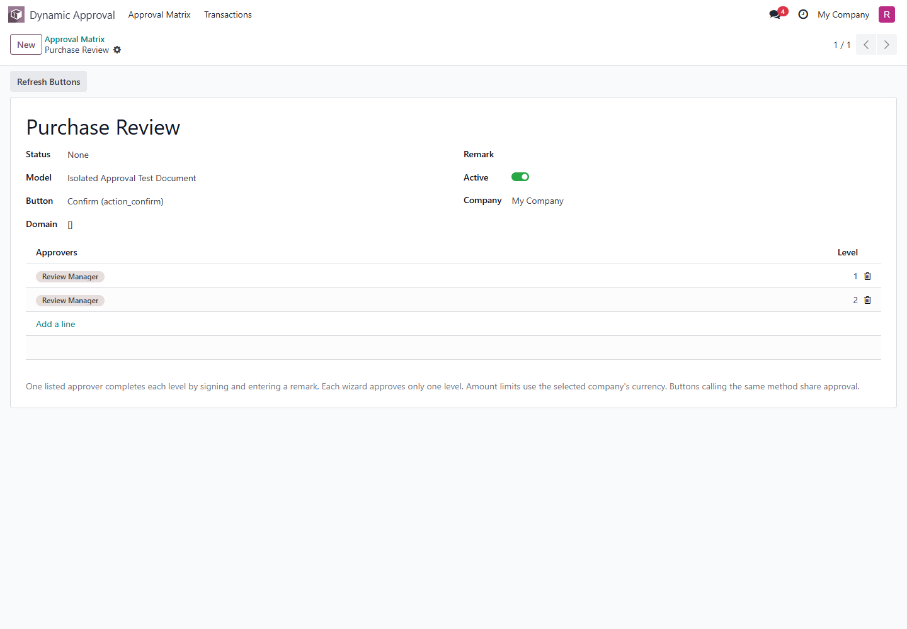

ODOO 17 · BY DEVKID
Configure sequential approvals on supported existing document buttons.

A form panel shows approvers, decisions and history. The list status follows the first button that started approval on each document. An optional mixin exposes the same status to custom view modifiers.
The original business method runs with the acting user's permissions. Amount/applicability changes require a new cycle. Final business validation failures preserve earlier committed approval levels.
Supports discovered public type="object" buttons on saved, single business records. Buttons using the same Python method share approval. Not all methods are suitable: validate each selected workflow in a staging database.
Action buttons (type="action"), bulk approval, general transient-wizard controls, delegation and email delivery are not included. Opening a returned wizard is not proof of final business execution.
Install Web Push Notify and Dynamic Approval Matrix. The only non-standard dependency is the companion web_push_notify addon by devkid; the original web_notify addon is not required. Restart workers and reload clients after deployment. See the included README for configuration and upgrade notes.
Uninstall deletes this addon's approval configuration and history. Archive rules when that information must be retained. The optional partner sample is not part of the production package.
Author: devkid · License: LGPL-3